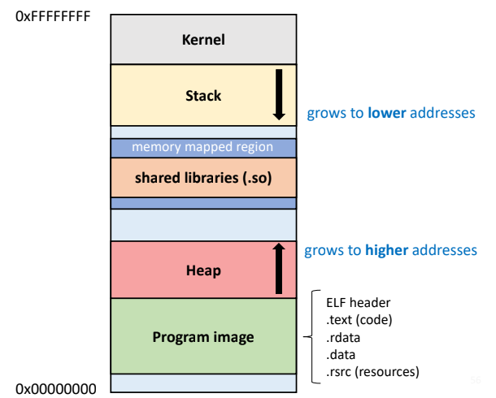
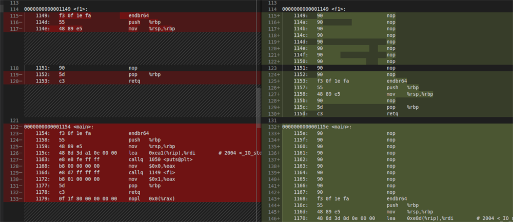
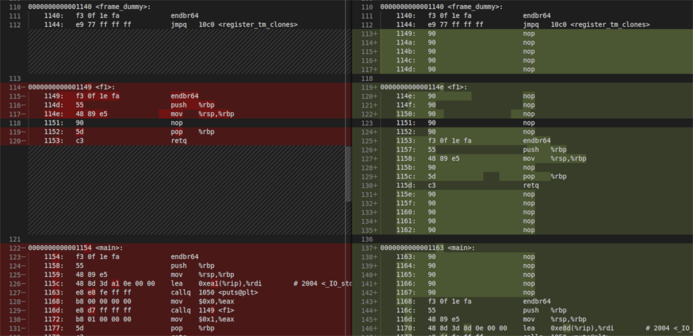
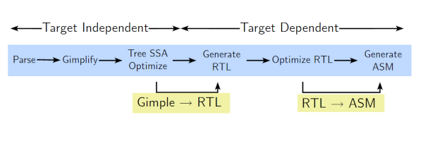
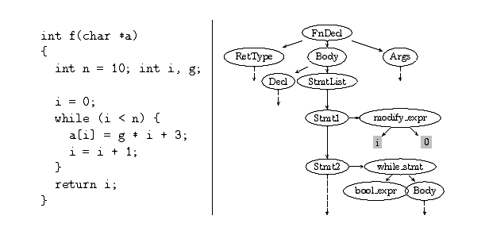
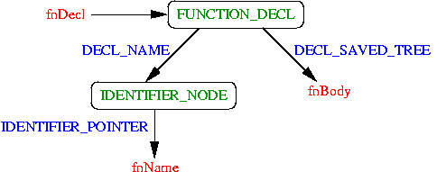
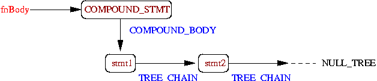
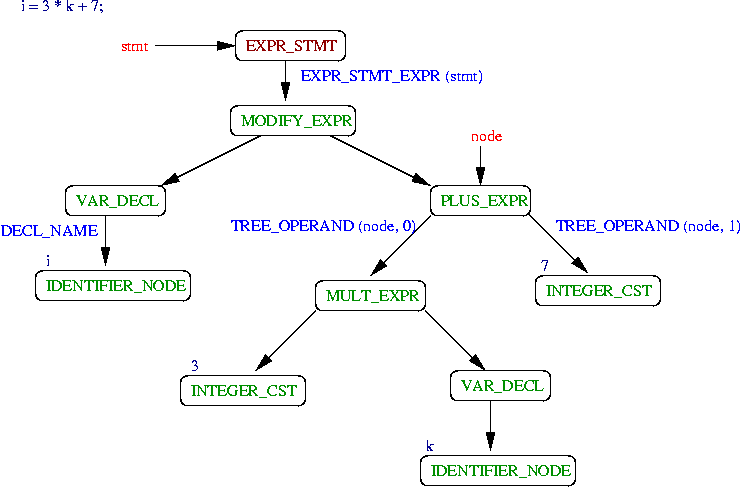

In the optic to enhance our embedded system’s security, having a compiler plugin feature is fundamental to add new features at compilation time without having to modify the compiler itself (and with minimum knowledge of compiler internals!) This article addresses GCC versions 9 and above on Ubuntu 20.04 LTS. I hope the guide can be enjoyed for other OS/GCC Version.
- 1. Brief introduction to GNU’s GCC
- 2. Getting started: Hello World!
- 3. Instrumenting a function for debugging or monitoring
- 4. Documentation
- 5. Disclaimer
1. Brief introduction to GNU’s GCC
The GNU toolchain is a collection of tools and libraries produced in the context of the GNU project. In 1983, Richard Stallman announced the GNU project. Its goal was to give the community freedom and control in their use of computing devices by developing (collaboratively) free software and letting users modify, copy, and distribute it freely.
The GNU toolchain was part of that software and today includes some of the most widespread tools used to develop and compile application such as:
- GNU make: an automation tool for compilation and build
- GNU Compiler Collection (GCC): a suite of compilers for several programming languages
- GNU C Library (glibc): core C library including headers, libraries, and dynamic loader
- GNU Binutils: a suite of tools including linker, assembler and other tools
- GNU Debugger (GDB): a code debugging tool
In particular, we will focus on GCC that, maybe, is the main component of the GNU toolchain. In practice, the GNU community placed a lot of effort into developing extensible and modular software to provide other people a way to contribute to the project adding functionalities. The straightforward way is via a plugin, namely providing a way to load a customizable module that interacts with the main module without modifying the project’s source code.
Then, from GCC 4.5.0 (2010), plugin support is available. [1]
Main advantages:
- Shortens build and test for new features because GCC does not need to be re-compiled
- Allows development and maintenance of features that can’t take place in GCC’s mainline
- Simplifies developers’s work when they have minimal knowledge of compiler internals.
2. Getting started: Hello World!
The purpose of this section is to introduce you to the world of GCC plugins. The first time I approached to this stuff, I was really surprised because the amount of material available to start with was very poor. Furthermore, the GCC documentation about plugins was really not sufficient to start. Luckily I found an article in LWN that helped me start. It is not update but, if you want to build something for an older version of GCC could be a good starting point [2].
2.1. Environment setup
A plugin is just a shared library that follows the convention posed by GCC.
From version 4.8. GCC is completely written in C++ [3]
Then we will need to write C++ code. As a C developer, I was a bit scared; however, I found that:
“According to a post by Mark Mitchell on the GCC mailing list, however, advanced C++ features such as multiple inheritance, templates and exceptions are to be avoided – the source code of the GNU Compiler Collection is to remain easily understandable for C programmers and should only include constructs that don’t lend themselves to errors.” [4] [5]
So, let’s start to develop! At first, you need all the libraries that contain all necessary symbols to build a GCC plugin. The easiest way to figure out where the include files are located is to run the following command in the console.
$ gcc -print-file-name=plugin
/usr/lib/gcc/x86_64-linux-gnu/9/plugin
If this command simply prints the word “plugin”, “ you have no plugin dev libraries installed. Then get your exact GCC version and then install the libraries. In some setups, happens that you have only the folder plugin with .so files but not the development libraries. In that case, you have to install it.
$ gcc --version
$ sudo apt install gcc-X.X-plugin-dev
Let’s start creating a directory move inside it.
$ mkdir gcc-instrumentation-plugin
$ cd gcc-instrumentation-plugin
$ touch main.cpp
2.2. Introduction to GCC plugin APIs
The gcc-plugin.h must be the first GCC header to be included.
#include <gcc-plugin.h>
If your editor/IDE does not find the header file, it could be in /usr/lib/gcc/x86_64-linux-gnu/7/plugin/include/. Anyway, as pointed out before, you can run the command gcc -print-file-name=plugin to make GCC print the path for you, then search for the include folder.
Clearly substitute your GCC version in the path. If you are using Visual Studio Code, you can add the directory in includePath to suppress include-errors.
2.2.1. Plugin license check
Every plugin should define the global symbol plugin_is_GPL_compatible. Indeed the GNU community is sensible to keep the software free and shareable, and the symbol serves to assert that the plugin is licensed under a GPL license. If the symbol does not exist, the compiler will output a fatal error with the following message:
fatal error: plugin name is not licensed under a GPL-compatible license
name: undefined symbol: plugin_is_GPL_compatible
compilation terminated
The symbol must be of integer type to match a forward declaration written in gcc-plugin.h. However, it does not need to be in any specific section because it is enough that the symbol exists in the global scope for GCC. So let’s define it at the beginning of our file.
int plugin_is_GPL_compatible;
2.2.2. Plugin initialization
Each plugin must export a function plugin_init called as soon as the plugin is loaded and is responsible for registering all callbacks and stuff required by the plugin. The function is called right before invoking the parser. The function has two arguments:
// if init fails, must return non-zero, otherwise it should return 0
int plugin_init ( struct plugin_name_args *plugin_info, // plugin info
struct plugin_gcc_version *version); // GCC version
Both structures, arguments of the function, are defined in the gcc-plugin.h. Let’s analyze them in details:
struct plugin_name_args:
- Not user-filled, rather a read-only structure
- It contains info that GCC got from the plugin
- Useful to get arguments passed to the plugin via the command line (we will see better)
struct plugin_gcc_version:
- It contains info about current GCC version, revision number and so on
- Useful to ensure your plugin operates on the appropriate version of GCC
Let’s extract them from the .h file:
/* Object that keeps track of the plugin name and its arguments. */
struct plugin_name_args
{
char *base_name; /* Name of the plugin (file w/o .so suffix) */
const char *full_name; /* Plugin path as specified with -fplugin=. */
int argc; /* Num of args specified with -fplugin-arg- */
struct plugin_argument *argv; /* Array of ARGC key-value pairs. */
const char *version; /* Version string provided by plugin. */
const char *help; /* Help string provided by plugin. */
}
/* Represents the gcc version. Used to avoid using an incompatible plugin. */
struct plugin_gcc_version
{
const char *basever;
const char *datestamp;
const char *devphase;
const char *revision;
const char *configuration_arguments;
};
Well, coming back to the ‘plugin_init’ function, the most straightforward way of implementing it is to use the plugin_default_version_check, which compares field by field two plugin_gcc_version structures.
#include "plugin-version.h"
// ...
/** Returns 0 if initialization finishes successfully. */
int plugin_init ( struct plugin_name_args *plugin_info,
struct plugin_gcc_version *version)
{
if (!plugin_default_version_check (version, &gcc_version))
return 1;
return 0;
}
The GCC version used to compile the plugin can be found in the symbol gcc_version defined in the header plugin-version.h. Of course, if you want a less strict check, you can implement your own comparison routine. We will stick for the simplest version.
If plugin_init returns 1, you will experiment a cc1: error: fail to initialize plugin during the compilation of the target program.
Furthermore, we can include some public information to developers that use our plugin using the plugin_info structure. In case the user asks for help (via gcc --help) or want to know the version (via gcc --version), the information present in the structure will be printed out.
/* Additional information about the plugin. Used by --help and --version. */
struct plugin_info
{
const char *version;
const char *help;
};
2.2.3. Plugin callbacks
Callbacks are the simplest way to interact with GCC while it is doing its work! We can make GCC call one of our function when a specific event occurs. Here is the list of possible events that could trigger a callback.
enum plugin_event
{
PLUGIN_START_PARSE_FUNCTION, /* Called before parsing the body of a func. */
PLUGIN_FINISH_PARSE_FUNCTION, /* After finishing parsing a function. */
PLUGIN_PASS_MANAGER_SETUP, /* To hook into pass manager. */
PLUGIN_FINISH_TYPE, /* After finishing parsing a type. */
PLUGIN_FINISH_DECL, /* After finishing parsing a declaration. */
PLUGIN_FINISH_UNIT, /* Useful for summary processing. */
PLUGIN_PRE_GENERICIZE, /* Allows to see low level AST in frontends. */
PLUGIN_FINISH, /* Called before GCC exits. */
PLUGIN_INFO, /* Information about the plugin. */
PLUGIN_GGC_START, /* Called at start of GCC Garbage Collection. */
PLUGIN_GGC_MARKING, /* Extend the GGC marking. */
PLUGIN_GGC_END, /* Called at end of GGC. */
PLUGIN_REGISTER_GGC_ROOTS, /* Register an extra GGC root table. */
PLUGIN_ATTRIBUTES, /* Called during attribute registration. */
PLUGIN_START_UNIT, /* Called before processing translation unit. */
PLUGIN_PRAGMAS, /* Called during pragma registration. */
PLUGIN_ALL_PASSES_START, /* Called before first pass from all_passes. */
PLUGIN_ALL_PASSES_END, /* Called after last pass from all_passes. */
PLUGIN_ALL_IPA_PASSES_START, /* Called before first ipa pass. */
PLUGIN_ALL_IPA_PASSES_END, /* Called after last ipa pass. */
PLUGIN_OVERRIDE_GATE, /* Allows to override pass gate decision for current_pass. */
PLUGIN_PASS_EXECUTION, /* Called before executing a pass. */
PLUGIN_EARLY_GIMPLE_PASSES_START, /* Called before subpasses of a GIMPLE_PASS in execute_ipa_pass_list. */
PLUGIN_EARLY_GIMPLE_PASSES_END, /* Called after subpasses of a GIMPLE_PASS in execute_ipa_pass_list. */
PLUGIN_NEW_PASS, /* Called when a pass is first instantiated. */
PLUGIN_INCLUDE_FILE, /* Called when a file is #include-d or given via the #line directive. */
PLUGIN_EVENT_FIRST_DYNAMIC /* Dummy event used for indexing callback array. */
};
I have used only a restricted subset of these events. However, I think they cover a lot of practical situations. Furthermore, plugins can also interact with the enumerator of events and generate new events dynamically. Honestly, I had’t tried yet, so please refer to the GCC documentation.
Now the question is how to register how plugin to being called when one of these events occurs? In practice, we have to use the function register_callback (and the dual unregister_callback if we need to de-register our plugin).
void register_callback (const char *plugin_name,
int event,
plugin_callback_func callback,
void *user_data
);
where the arguments are:
char *name: The plugin nameint event: The event code taken from the enum aboveplugin_callback_func callback: The function of the plugin that handles eventvoid *user_data: Pointer to plugin-specific data passed as input to the function
Things become a little more interesting when we analyze the type plugin_callback_func that is a pointer to a function representing the function type needed to be a callback routine candidate.
/* Function type for a plugin callback routine.
GCC_DATA - event-specific data provided by GCC
USER_DATA - plugin-specific data provided by the plugin */
typedef void (*plugin_callback_func) (void *gcc_data, void *user_data);
The problem here is that no one knows what gcc_data contains for each event and is not documented anywhere! The same is true for user_data. Except for a few events, you have to proceed to try debugging or seek the GCC internals. For several, I already had the answer you need!
For our first example, we will register our plugin to the event PLUGIN_INFO, where the callback function should be NULL, and the user_data is the plugin_info structure.
2.3. Compiling and loading plugins onto GCC
As I pointed out before, plugins are shared libraries. They are loaded by the compiler using dlopen on Linux (or the equivalent DLL open on Windows) and invoked when needed during the compilation process. Our reference OS is Ubuntu, so I will consider only .so libraries, but I hope won’t be a problem for those who use Windows.
To obtain a suitable GCC plugin, you simply have to adhere to GCC APIs and compile it as a shared library. Ok, this is not true; when you need to register to GCC passes (we will see what they are), you have to take care of passing -fno-rtti option. I don’t remember even how I find it… for sure caused me a severe headache. [6]
-fno-rttidisables generation of information about every class with virtual functions for use by the C++ runtime type identification features. If you don’t use those parts of the language, you can save some space by using this flag. GCC itself is built with -fno-rtti. Hence plugins that create passes will need to be built with RTTI disabled in order to link against gcc, or they will fail to load. [7]
In the example, at the end of the chapter, I will provide a ready-to-use makefile.
Let’s go ahead. In practice, when we need to use a plugin, we have to inform GCC to load it using the option:
-fplugin=/path/to/lib.so -fplugin-arg-name-key1[=value1]
where the option -fplugin takes the path to the shared library with the extension. Also you can pass arguments to GCC using key-value pairs. Note that you can specify more than one plugin using multiple -fplugin arguments and, of course, multiple arguments to plugins.
You can also provide the short name of the plugin (with no dots nor slashes) only if the plugin is placed in the plugin directory (and you can figure out the location of the default plugin directory using the command we have seen so far gcc -print-file-name=plugin).
2.4. Complete ‘hello world!’ example
Great! Let’s write out our complete main.cpp to realize our “hello-world” example!
Here you can find the raw files: hello-world
main.cpp
#include "plugin-version.h"
int plugin_is_GPL_compatible;
/* Additional information about the plugin. Used by --help and --version. */
static struct plugin_info inst_plugin_info =
{
.version = "0.1",
.help = "Currently I am not able to help you!",
};
/* Represents the gcc version we need. Used to void using an incompatible plugin. */
static struct plugin_gcc_version inst_plugin_ver =
{
.basever = "9.2.1",
};
/** Returns 0 if initialization finishes successfully. */
int plugin_init ( struct plugin_name_args *plugin_info,
struct plugin_gcc_version *version)
{
if (strncmp(inst_plugin_ver.basever, version->basever, strlen(version->basever)))
return 1;
// tell to GCC some info about the plugin
register_callback("inst_plugin", PLUGIN_INFO, NULL, &inst_plugin_info);
printf("Hello world!\n");
// done!
return 0;
}
Then we need a target c program to compile with GCC and then to test our plugin! We can write an elementary program that does all but printing something to the standard output.
target.c
#include <stdio.h>
int main()
{
printf("I'm a target C program.\n");
return 1;
}
Finally, we can use a Makefile to compile our GCC plugin.
(If you experiment a missing separator error, keep attention to tab-width)
Makefile
# The gcc used to compile our plugin (consider that is written in C++!)
HOST_GCC = g++
# The gcc that will support our plugin
TARGET_GCC = gcc
# The name of the file we want to compile
PLUGIN_SOURCE_FILES = main.cpp
# Plugins directory of GCC
GCC_PLUGINS_DIR = $(shell $(TARGET_GCC) -print-file-name=plugin)
# GCC CPP flags (we need position-independent code and run-time type info support disabled)
CXXFLAGS+= -I$(GCC_PLUGINS_DIR)/include -fPIC -fno-rtti
# our recipes
.PHONY: all clean test
all: inst_plugin.so
inst_plugin.so: $(PLUGIN_SOURCE_FILES)
$(HOST_GCC) -shared $(CXXFLAGS) $^ -o $@
test: inst_plugin.so
gcc target.c -fplugin=$(shell pwd)/inst_plugin.so -o bin
clean:
rm -f inst_plugin.so bin
Ok, let’s try to compile the target program with our brand new plugin.
$ make
$ gcc target.c -fplugin=`pwd`/inst_plugin.so -o bin
Hello world!
Hello world! will be printed out during compilation! Great!
The same is valid if you ask for help or for GCC version, your define properties will be printed
$ gcc -fplugin=`pwd`/inst_plugin.so --verbose --help
...
Versions of loaded plugins:
inst_plugin: 0.1
Help for the loaded plugins:
inst_plugin:
Currently I am not able to help you!
...
I have also provided a target test in the makefile to run make test and check the output of your plugin directly during the compilation of a target program. We have finished for this first “Hello world” example.
If you arrived here and need something more, it means you are really interested in the topic. Let’s go ahead.
3. Instrumenting a function for debugging or monitoring
Now, let’s jump directly to our objective. We want to instrument the code we are compiling with a function on each function call. Reasons could be many, maybe we want to track the flow of execution of our program, perhaps we are facing a tricky bug, and we want to figure out what is going on, or maybe we just want to be sure our program is following the intended flow.
We have lots of possible choices, we will start with the simplest one!
3.1. Instrument code with GCC compiling options
At first, we could just take advantage of the options available when compiling with GCC. Actually, if we don’t need anything special, we could just stick with -finstrument-functions or -fpatchable-function-entry.
3.1.1. GCC option: -finstrument
This has been quoted directly from GCC documentation:
-finstrument-functionsGenerate instrumentation calls for entry and exit to functions. Just after function entry and just before function exit, the following profiling functions are called with the address of the current function and its call site. (On some platforms,
__builtin_return_addressdoes not work beyond the current function, so the call site information may not be available to the profiling functions otherwise.)
void __cyg_profile_func_enter (void *this_fn, void *call_site);
void __cyg_profile_func_exit (void *this_fn, void *call_site);The first argument is the address of the start of the current function, which may be looked up exactly in the symbol table.
This instrumentation is also done for functions expanded inline in other functions. The profiling calls indicate where, conceptually, the inline function is entered and exited. This means that addressable versions of such functions must be available. If all your uses of a function are expanded inline, this may mean an additional expansion of code size. If you use extern inline in your C code, an addressable version of such functions must be provided. (This is normally the case anyway, but if you get lucky and the optimizer always expands the functions inline, you might have gotten away without providing static copies.)
A function may be given the attribute no_instrument_function, in which case this instrumentation is not done. This can be used, for example, for the profiling functions listed above, high-priority interrupt routines, and any functions from which the profiling functions cannot safely be called (perhaps signal handlers, if the profiling routines generate output or allocate memory).
In practice, we can instrument each function of the target program. For each function call/return, the respective __cyg_profile_func_* will be called passing the address of the function called and the call site’s address. Let’s have a try, let’s write a target.c program.
Here you can find the raw files: example-1
#include <stdio.h>
// Note:
// We need 'no_instrument_function' attribute on __cyg_profile_fun_*
// called every time a function get called
__attribute__ ((no_instrument_function)) void __cyg_profile_func_enter (void *this_fn, void *call_site)
{
printf("Entering in 0x%lx from 0x%lx...\n", (unsigned long)this_fn, (unsigned long)call_site);
}
// called every time a function returns
__attribute__ ((no_instrument_function)) void __cyg_profile_func_exit (void *this_fn, void *call_site)
{
printf("Exiting from 0x%lx to 0x%lx...\n", (unsigned long)this_fn, (unsigned long)call_site);
}
void f1()
{
return;
}
int main()
{
printf("I'm a target C program.\n");
f1();
return 1;
}
Ok, the program above is a foolish example. But it can be enough to understand what are the issues that may arise when using this approach. Actually, we have a main function that calls the function f1.
And then we wrote the two __cyg_profile_fun_* that will be called each function call/return. Of course, when __cyg_profile_fun_* are called, they trigger the mechanism again, so we need to protect them with no_instrument_function. Indeed, without the attribute, we can incur easily in a stack overflow.
Let’s compile and run, including, for convenience, debugging symbols.
$ gcc target.c -g -finstrument-functions -o bin
$ ./bin
Entering in 0x5561cfe341ef from 0x7f02c8f231e3... # enter in main
I'm a target C program.
Entering in 0x5561cfe341cf from 0x5561cfe34236... # enter in f1 from main
Exiting from 0x5561cfe341cf to 0x5561cfe34236... # exit from f1 to main
Exiting from 0x5561cfe341ef to 0x7f02c8f231e3... # exit from main
The profiling functions are placed after the prologue of the main and before the epilogue. Let’s dump the program assembly to understand what happened
$ objdump -d bin
...
Disassembly of section .text:
...
0000000000001206 <main>:
...
...
120a: 55 push %rbp
120b: 48 89 e5 mov %rsp,%rbp
120e: 53 push %rbx
120f: 48 83 ec 08 sub $0x8,%rsp
...
1224: e8 40 ff ff ff callq 1169 <__cyg_profile_func_enter>
...
1255: e8 42 ff ff ff callq 119c <__cyg_profile_func_exit>
...
1261: 5d pop %rbp
1262: c3 retq
...
This is what happens, at least on my workstation. It was easy to set up everything, writing two functions is enough, and we do not have to bother ourselves with plugins, GCC internals, strange compiling options, and stuff like that. But this is the only positive aspect, unfortunately!
Indeed, in the example, we tracked the program flow only because it was an elementary target program. But imagine if you had thousands of lines of code and branches. Also, really it is missing a way to get information about the function we are analyzing. We have only an address, actually a virtual one! Let’s dump the symbol table of our binary.
$ readelf -s bin
...
Symbol table '.symtab' contains 74 entries:
...
...
64: 00000000000011cf 49 FUNC GLOBAL DEFAULT 16 f1
...
69: 00000000000011ef 87 FUNC GLOBAL DEFAULT 16 main
...
73: 000000000000119c 51 FUNC GLOBAL DEFAULT 16 __cyg_profile_func_exit
Symbols are stored in the binary, starting from 0x0. The address got on the screen are virtual. In many embedded systems, there is no virtual memory, and this approach could simply work. But in modern OSes, address spaces are randomized for a new process. When we try to get the line from the address (we can use the addr2line tool), we simply get a bunch of ??. Because, as stated above, the addresses printed are virtual.
$ addr2line -f -e bin 0x5561cfe341ef # VA: it is not valid for addr2line
??
??:0
$ addr2line -f -e bin 0x11ef
main
target.c:24
While the process is running, you can get the base address of the process in memory reading the memory map of the process
$ cat /proc/<pid>/maps
5561cfe33000-5561cfe34000 r--p 00000000 08:02 5378191 .../bin
5561cfe34000-5561cfe35000 r-xp 00001000 08:02 5378191 .../bin
5561cfe35000-5561cfe36000 r--p 00002000 08:02 5378191 .../bin
5561cfe36000-5561cfe37000 r--p 00002000 08:02 5378191 .../bin
5561cfe37000-5561cfe38000 rw-p 00003000 08:02 5378191 .../bin
5561d11b2000-5561d11d3000 rw-p 00000000 00:00 0 [heap]
7ff032b87000-7ff032bac000 r--p 00000000 08:02 2902 /usr/lib/x86_64-linux-gnu/libc-2.30.so
7ff032bac000-7ff032d24000 r-xp 00025000 08:02 2902 /usr/lib/x86_64-linux-gnu/libc-2.30.so
7ff032d24000-7ff032d6e000 r--p 0019d000 08:02 2902 /usr/lib/x86_64-linux-gnu/libc-2.30.so
7ff032d6e000-7ff032d71000 r--p 001e6000 08:02 2902 /usr/lib/x86_64-linux-gnu/libc-2.30.so
7ff032d71000-7ff032d74000 rw-p 001e9000 08:02 2902 /usr/lib/x86_64-linux-gnu/libc-2.30.so
7ff032d74000-7ff032d7a000 rw-p 00000000 00:00 0
7ff032d93000-7ff032d94000 r--p 00000000 08:02 2894 /usr/lib/x86_64-linux-gnu/ld-2.30.so
7ff032d94000-7ff032db6000 r-xp 00001000 08:02 2894 /usr/lib/x86_64-linux-gnu/ld-2.30.so
7ff032db6000-7ff032dbe000 r--p 00023000 08:02 2894 /usr/lib/x86_64-linux-gnu/ld-2.30.so
7ff032dbf000-7ff032dc0000 r--p 0002b000 08:02 2894 /usr/lib/x86_64-linux-gnu/ld-2.30.so
7ff032dc0000-7ff032dc1000 rw-p 0002c000 08:02 2894 /usr/lib/x86_64-linux-gnu/ld-2.30.so
7ff032dc1000-7ff032dc2000 rw-p 00000000 00:00 0
7ffeaf8a5000-7ffeaf8c6000 rw-p 00000000 00:00 0 [stack]
7ffeaf94d000-7ffeaf950000 r--p 00000000 00:00 0 [vvar]
7ffeaf950000-7ffeaf951000 r-xp 00000000 00:00 0 [vdso]
ffffffffff600000-ffffffffff601000 --xp 00000000 00:00 0 [vsyscall]
The memory map of the process is composed of many blocks. Here below, I’ve reported a simplified version (obviously this is valid only for Linux!).

Thanks to Alessandro Biondi for the image.
We need the program image base address, identifiable with the name of our binary. Then with a simple subtraction, we can prove everything works.
0x5561cfe341ef - # main virtual address
0x5561cfe33000 = # process base address
0x0000000011ef # main symbol location
Last note, in this example, the first thing that these functions do is call the other one but, keep attention, the call site is the address in which the function gets called and not the caller function address!
In conclusion, this approach is straightforward to set up but has a lot of weaknesses.
PROS
- Simple to setup
CONS
- Not performance-oriented, you have two additional function calls for each function
- It is difficult to modify the profiling function’s behavior concerning the function who received instrumentation.
- It is really complicated to interact with code and to get function names or info.
- The profiling functions must be present in the target program
- Function calls always inserted after the prologue and before the epilogue
3.1.2. GCC option: -fpatchable
This has been quoted, again, directly from GCC documentation
-fpatchable-function-entry=N[,M]Generate N NOPs right at the beginning of each function, with the function entry point before the Mth NOP. If M is omitted, it defaults to 0 so the function entry points to the address just at the first NOP. The NOP instructions reserve extra space which can be used to patch in any desired instrumentation at run time, provided that the code segment is writable. The amount of space is controllable indirectly via the number of NOPs; the NOP instruction used corresponds to the instruction emitted by the internal GCC back-end interface gen_nop. This behavior is target-specific and may also depend on the architecture variant and/or other compilation options.
For run-time identification, the starting addresses of these areas, which correspond to their respective function entries minus M, are additionally collected in the
__patchable_function_entriessection of the resulting binary.Note that the value of
__attribute__ ((patchable_function_entry (N,M)))takes precedence over command-line option-fpatchable-function-entry=N,M. This can >be used to increase the area size or to remove it completely on a single function. If N=0, no pad location is recorded.The NOP instructions are inserted at—and maybe before, depending on M—the function entry address, even before the prologue.
The maximum value of N and M is 65535.
This is a bit simpler than the previous one. The explanation is more accessible, it is useful to “make space” before the function prologue to patch the function with some code. If we need to check the function behavior before the prologue, we can do it quickly.
At our disposal, we have two parameters, N and M. N, which indicates the number of NOPs we want to insert before the function prologue while M indicates the displacement. Let’s try it with a simple target C program.
Here you can find the raw files: example-2
#include <stdio.h>
void f1()
{
return;
}
int main()
{
printf("I'm a target C program.\n");
f1();
return 1;
}
We will compile in two manners, one with the patchable option and the other without.
$ gcc target.c -g -fpatchable-function-entry=10 -o bin_patchable
$ gcc target.c -g -o bin
$ objdump -d bin_patchable > dis_patchable
$ objdump -d bin > dis
Ok, so let’s compare them. I will attach an image, hoping it would be more evident than a diff.

We can appreciate 10 NOPs added at the beginning of each function, leading to “patchable” code. Let’s try again using the M parameter.
$ gcc target.c -g -fpatchable-function-entry=10,5 -o bin_patchable
$ gcc target.c -g -o bin

Also, 10 NOPs were added but shifted up by 5, then modifying the functions placed before. Although the mechanism is simple, personally, I think it leaves a poor control of what happens actually.
PROS
- Simple to setup
- Good flexibility, you are free to place a variable number of NOPs and shift them
- Performance-oriented cause you can patch assembly directly
CONS
- Need a tool to patch the binary
- NOPs are added only at the beginning of the function
3.2. Get your hands dirty: working with GCC internals
3.2.1. Overview on GCC compilation process
Part of this section was built using material that I have found during my research on GCC internals and I want to say thanks to original authors and give them credits.
For sure, we have discovered that GCC’s options are powerful but, at the same time, not enough if we need flexibility and performance. We need to understand something about GCC internals to exploit the power of GCC plugins. We will start from the basis.
GCC (and, I think, almost all compilers) works analyzing code in subsequent phases called passes. At each pass, the compiler does some action, such as abstracting the representation of a program, optimizing data structures, etc. GCC organizes its compilation phase in several passes[12]
- Parsing pass: The language front end turns text into bits.
- Gimplification pass: The bits are turned into something we can optimize.
- IPA passes: Inter-procedural optimizations.
- Tree SSA passes: Optimizations on a high-level representation.
- RTL passes: Optimizations on a low-level representation.
I am all but an expert in this field, so if you want to dive deeper into the argument, refer to the GCC documentation. For our purposes, it is enough to check only some aspects.
Talking simpler, we can say that all compilers include three macro-components: a front-end, a middle-end, and a back-end. The front-end macro-component considers all the things about the target program’s language while the back-end deals with the target architecture.

In practice, GCC analyzes the target program’s code, visualizing it as an abstract tree, and then it builds a representation using GENERIC/GIMPLE. Then, it examines the GIMPLE abstraction trying to operate some optimizations such as inlining functions. Then it performs the RTL pass where it works on the low-level representation of the program (RTL stands for register transfer layout). RTL is the way GCC uses to map GIMPLE code to the register of the machine.

As a consequence, with our plugin, we can operate mainly in two way:
- before or after the GIMPLE pass if we want to interact with the abstract representation letting GCC generate the low-level code
- at the RTL pass if we are worried about performance or we need to operate on the low-level representation
Basically, we will see both approaches, trying to get the best of both.
3.2.2. Working on: AST & GENERIC/GIMPLE
AST (Abstract Syntax Trees) are intermediate representations produced by the GCC front-end. The purpose of GENERIC is to provide a language-independent way of representing an entire function as a tree. Actually, tree is the central data structure used by GCC in its internal representation of a target program. The tree, obviously, is composed of children nodes of type tree. Basically, a tree is a C pointer type that points to different varieties’ object.

The image above shows what means represent a function with a tree. Each ellipse represents a node of the tree, described using GENERIC. Let’s suppose we want to focus on the tree structure of a function.

Here I have reported some examples taken from the sources I have linked above. The first is the declaration of a function.

The body is a tree too composed, again, of tree nodes.

The last example refers to an expression.
These images are taken from an article written in 2002. Take these images more as examples than reference because many things have been changed over the years.
And then what is GIMPLE?
GIMPLE is a three-address representation derived from GENERIC by breaking down GENERIC expressions into tuples of no more than 3 operands[7]
I won’t say a lot more, let’s try to implement something. For this example, the idea is simple: I want to register a profiled attribute. When the attribute is attached to a function, the function will be profiled, calling an __inst_profile function.
Here we can see much useful stuff that can be reused to implement really complex compilation behavior.
Here you can find the raw files: example-3
#include <gcc-plugin.h>
#include <tree.h>
#include <gimple.h>
#include <tree-pass.h>
#include <gimple-iterator.h>
#include <stringpool.h>
#include <attribs.h>
/**
* When 1 enables verbose printing
*/
#define DEBUG 1
/**
* Name of the function called to profile code
*/
#define FUNCTION_NAME "__inst_profile"
/**
* Name of the attribute used to instrument a function
*/
#define ATTRIBUTE_NAME "profiled"
/**
* Name of this plugin
*/
#define PLUGIN_NAME "inst_plugin"
/**
* Version of this plugin
*/
#define PLUGIN_VERSION "0.1"
/**
* Help/usage string for the plugin
*/
#define PLUGIN_HELP "Usage: registers an attribute " ATTRIBUTE_NAME
/**
* Required GCC version
*/
#define PLUGIN_GCC_BASEV "9.2.1"
// -----------------------------------------------------------------------------
// GCC PLUGIN SETUP (BASIC INFO / LICENSE / REQUIRED VERSION)
// -----------------------------------------------------------------------------
int plugin_is_GPL_compatible;
/**
* Additional information about the plugin. Used by --help and --version
*/
static struct plugin_info inst_plugin_info =
{
.version = PLUGIN_VERSION,
.help = PLUGIN_HELP,
};
/**
* Represents the gcc version we need. Used to void using an incompatible plugin
*/
static struct plugin_gcc_version inst_plugin_ver =
{
.basever = PLUGIN_GCC_BASEV,
};
// -----------------------------------------------------------------------------
// GCC EXTERNAL DECLARATION
// -----------------------------------------------------------------------------
/**
* Takes a tree node and returns the identifier string
* @see https://gcc.gnu.org/onlinedocs/gccint/Identifiers.html
*/
#define FN_NAME(tree_fun) IDENTIFIER_POINTER (DECL_NAME (tree_fun))
/**
* Takes a tree node and returns the identifier string length
* @see https://gcc.gnu.org/onlinedocs/gccint/Identifiers.html
*/
#define FN_NAME_LEN(tree_fun) IDENTIFIER_LENGTH (DECL_NAME (tree_fun))
/**
* Print GIMPLE statement G to FILE using SPC indentation spaces and FLAGS
* @note Makes use of pp_gimple_stmt_1
* @see Declared in gimple-pretty-print.h
* @see Flags are listed in dumpfile.h
*/
extern void print_gimple_stmt(FILE * file, gimple* g, int spc, dump_flags_t flags);
/**
* Print tree T, and its successors, on file FILE. FLAGS specifies details to
* show in the dump
* @note Makes use of dump_generic_node
* @see Declared in tree-pretty-print.h
* @see Flags are listed in dumpfile.h
*/
extern void print_generic_stmt(FILE* file, tree t, dump_flags_t flags);
/**
* The global singleton context aka "g". The name is chosen to be easy to type
* in a debugger. Represents the 'global state' of GCC
*
* GCC's internal state can be divided into zero or more "parallel universe" of
* state; an instance of the class context is one such context of state
*
* @see Declared in context.h
*/
extern gcc::context *g;
// -----------------------------------------------------------------------------
// GCC ATTRIBUTES MANAGEMENT (REGISTERING / CALLBACKS)
// -----------------------------------------------------------------------------
/**
* Insert a single ATTR into the attribute table
* @see Declared in plugin.h
* @note Insert the attribute into the 'gnu' attributes namespace
*/
extern void register_attribute(const struct attribute_spec *attr);
/**
* Attribute handler callback
* @note NODE points to the node to which the attribute is to be applied. NAME
* is the name of the attribute. ARGS is the TREE_LIST of arguments (may be
* NULL). FLAGS gives information about the context of the attribute.
* Afterwards, the attributes will be added unless *NO_ADD_ATTRS is set to true
* (which should be done on error). Depending on FLAGS, any attributes to be
* applied to another type or DECL later may be returned; otherwise the return
* value should be NULL_TREE. This pointer may be NULL if no special handling is
* required
* @see Declared in tree-core.h
*/
static tree handle_instrument_attribute(tree *node, tree name, tree args, int flags, bool *no_add_attrs)
{
#if DEBUG == 1
fprintf(stderr, "> Found attribute\n");
fprintf(stderr, "\tnode = ");
print_generic_stmt(stderr, *node, TDF_NONE);
fprintf(stderr, "\tname = ");
print_generic_stmt(stderr, name, TDF_NONE);
#endif
return NULL_TREE;
}
/**
* Structure describing an attribute and a function to handle it
* @see Declared in tree-core.h
* @note Refer to tree-core for docs about
*/
static struct attribute_spec instrument_attr = {
ATTRIBUTE_NAME, /* name */
0, /* min_len */
0, /* max_len */
false, /* decl_req */
false, /* type_req */
false, /* fn_type_req */
false, /* affects_type_identity */
handle_instrument_attribute, /* handler */
NULL /* exclusions */
};
/**
* Plugin callback called during attribute registration
*/
static void register_attributes(void *event_data, void *data)
{
fprintf(stderr, "> Registering attribute '%s'\n", ATTRIBUTE_NAME);
register_attribute(&instrument_attr);
}
// -----------------------------------------------------------------------------
// PLUGIN INSTRUMENTATION LOGICS
// -----------------------------------------------------------------------------
/**
* Create a function call to '__profile' and insert it before the given stmt
*/
static void insert_instrumentation_fn(gimple* curr_stmt)
{
// build function prototype
tree proto = build_function_type_list(
void_type_node, // return type
NULL_TREE // varargs terminator
);
// builds and returns function declaration with NAME and PROTOTYPE
tree decl = build_fn_decl(FUNCTION_NAME, proto);
// build the GIMPLE function call to decl
gcall* call = gimple_build_call(decl, 0);
// get an iterator pointing to first basic block of the statement
gimple_stmt_iterator gsi = gsi_for_stmt(curr_stmt);
// insert it before the statement that was passed as the first argument
gsi_insert_before(&gsi, call, GSI_NEW_STMT);
}
/**
* For each function lookup attributes and attach profiling function
*/
static unsigned int instrument_assignments_plugin_exec(void)
{
// get the FUNCTION_DECL of the function whose body we are reading
tree fndef = current_function_decl;
// print the function name
fprintf(stderr, "> Inspecting function '%s'\n", FN_NAME(fndef));
// get the attributes list
tree attrlist = DECL_ATTRIBUTES(fndef);
// lookup into attribute list searcing for our registered attribute
tree attr = lookup_attribute(ATTRIBUTE_NAME, attrlist);
// if the attribute is not present
if (attr == NULL_TREE)
return 0;
// attribute was in the list
fprintf(stderr, "\t attribute %s found! \n", ATTRIBUTE_NAME);
// get function entry block
basic_block entry = ENTRY_BLOCK_PTR_FOR_FN(cfun)->next_bb;
// get the first statement
gimple* first_stmt = gsi_stmt(gsi_start_bb(entry));
// warn the user we are adding a profiling function
fprintf(stderr, "\t adding function call before ");
print_gimple_stmt(stderr, first_stmt, 0, TDF_NONE);
// insert the function
insert_instrumentation_fn(first_stmt);
// done!
return 0;
}
/**
* Metadata for a pass, non-varying across all instances of a pass
* @see Declared in tree-pass.h
* @note Refer to tree-pass for docs about
*/
struct pass_data ins_pass_data =
{
.type = GIMPLE_PASS, // type of pass
.name = PLUGIN_NAME, // name of plugin
.optinfo_flags = OPTGROUP_NONE, // no opt dump
.tv_id = TV_NONE, // no timevar (see timevar.h)
.properties_required = PROP_gimple_any, // entire gimple grammar as input
.properties_provided = 0, // no prop in output
.properties_destroyed = 0, // no prop removed
.todo_flags_start = 0, // need nothing before
.todo_flags_finish = TODO_update_ssa|TODO_cleanup_cfg // need to update SSA repr after and repair cfg
};
/**
* Definition of our instrumentation GIMPLE pass
* @note Extends gimple_opt_pass class
* @see Declared in tree-pass.h
*/
class ins_gimple_pass : public gimple_opt_pass
{
public:
/**
* Constructor
*/
ins_gimple_pass (const pass_data& data, gcc::context *ctxt) : gimple_opt_pass (data, ctxt) {}
/**
* This and all sub-passes are executed only if the function returns true
* @note Defined in opt_pass father class
* @see Defined in tree-pass.h
*/
bool gate (function* gate_fun)
{
return true;
}
/**
* This is the code to run when pass is executed
* @note Defined in opt_pass father class
* @see Defined in tree-pass.h
*/
unsigned int execute(function* exec_fun)
{
return instrument_assignments_plugin_exec();
}
};
// instanciate a new instrumentation GIMPLE pass
ins_gimple_pass inst_pass = ins_gimple_pass(ins_pass_data, g);
// -----------------------------------------------------------------------------
// PLUGIN INITIALIZATION
// -----------------------------------------------------------------------------
/**
* Initializes the plugin. Returns 0 if initialization finishes successfully.
*/
int plugin_init(struct plugin_name_args *info, struct plugin_gcc_version *ver)
{
// new pass that will be registered
struct register_pass_info pass;
// this plugin is compatible only with specified base ver
if (strncmp(inst_plugin_ver.basever, ver->basever, strlen(ver->basever)))
return 1;
// tell to GCC some info about this plugin
register_callback(PLUGIN_NAME, PLUGIN_INFO, NULL, &inst_plugin_info);
// warn the user about the presence of this plugin
printf("> Instrumentation plugin '%s @ %s' was loaded onto GCC\n", PLUGIN_NAME, PLUGIN_VERSION);
// insert inst pass into the struct used to register the pass
pass.pass = &inst_pass;
// and get called after GCC has produced SSA representation
pass.reference_pass_name = "ssa";
// after the first opt pass to be sure opt will not throw away our stuff
pass.ref_pass_instance_number = 1;
pass.pos_op = PASS_POS_INSERT_AFTER;
// add our pass hooking into pass manager
register_callback(PLUGIN_NAME, PLUGIN_PASS_MANAGER_SETUP, NULL, &pass);
// get called at attribute registration
register_callback(PLUGIN_NAME, PLUGIN_ATTRIBUTES, register_attributes, NULL);
// everthing has worked
return 0;
}
The code is fully commented. Unfortunately, it is tough to explain everything step by step.
#include <stdio.h>
void __inst_profile()
{
printf("Do something here!\n");
}
__attribute((profiled)) void f1()
{
int a;
a = a + 1;
return;
}
int main()
{
printf("I'm a target C program.\n");
f1();
return 1;
}
So let’s write a simple target program and proceed to compilation!
$ gcc target.c -fplugin=`pwd`/inst_plugin.so -o bin
> Instrumentation plugin 'inst_plugin @ 0.1' was loaded onto GCC
> Registering attribute 'profiled'
> Found attribute
node = f1
name = profiled
> Inspecting function '__inst_profile'
> Inspecting function 'f1'
attribute profiled found!
adding function call before a_2 = a_1(D) + 1;
> Inspecting function 'main'
$ ./bin
I'm a target C program.
Do something here!
Fine! The plugin was loaded onto GCC, and then, when inspecting functions, it found the attribute. At that point, it inserted the function call. When we run the binary, we can appreciate the output is enriched with the function call!
3.3. Instrument code with low-level ASM
In this last section, we want to examine the question more in-depth. The idea is to get our hands dirty and work directly at the low-level. Why we have to do this? Actually, it depends, maybe you want to realize something more powerful or with better performance. Or you need to output specific instructions for some reason. In this example, we will try to implement the same stuff of the other sections but avoiding the function call mechanism.
3.3.1. Introduction to RTL language
This last section deals with low-level representation created by GCC and represented with RTL (Register Transfer Language). RTL is, as the name suggests, a language in which the instructions are built in a kind of algebraic form that describes what the instructions really do. Each RTL instruction represents, pretty much, the instruction that will be outputted by GCC as assembly opcodes.
RTL uses five kinds of objects[13]:
- expressions
- integers
- wide integers
- strings
- vectors
Each RTL object is, practically, a list made up of structures that point at other structures. We focus on expressions, that are the most important ones. Like the other objects, an RTL expression or rtx is a structure, referred with a pointer.
Expressions are classified by expression codes (also called RTX codes). The expression code is a name defined in rtl.def. The possible expression codes and their meanings are machine-independent. The RTX code can be extracted with the macro GET_CODE (x) and altered with PUT_CODE (x, newcode).
Let’s analyze one of the instructions that compose the prologue of a function push %ebp. This instruction is represented in RTL by the following RTL expression.
(insn/f 13 22 14 // /f means that it is part of a function prologue
// isns number 13, followed by isns 14 and preceded by 22
(set // represent the action of storing a value somewhere
(mem:DI // represents a reference to main memory (double integer 8 byte)
(pre_dec:DI // before accessing needed to decrement the stack pointer
(reg/f:DI 7 sp) // reference to the 7th register, sp (8 byte) that contains a pointer
) [0 S8 A8] // no alias set, access to 8 bytes memory, 8 byte aligned expression
)
(reg/f:DI 6 bp) // access to the 6th reg. bp, that contains a pointer
) "target.c":11:1 -1 // found that in target.c line 11
(nil) // end of list of rtx
)
RTL is a language that provides a lot of information! It starts saying the instruction 13 will be followed by instruction 14 and preceded by instruction 22. Then it says that the instruction takes apart in a function prologue with the flag /f.
Subsequently, it says the instruction will store a value in the main memory. The value to be stored must be taken from the 6th register of the machine, the bp register taking the entire 8-byte value, and also indicates that the register contains a frame_related pointer (flag /f). The place in which storing is calculated using the 7th register of the machine sp using all 8 bytes and indicates that sp contains a frame_related pointer (flag /f). Furthermore, the access to the memory must be preceded by a decrement of the register itself.
For each operation we need to do at a low-level, we have to take care of RTL. GCC has its own API to build RTX expression. Each RTX expression must have a side one, namely the modification of the state of the machine. The most common are[14]:
set lval x: The action of storing the value ofxinto the place represented bylvalreturn: Return from the current functioncall function nargs: Function call wherefunctionis a mem expression whose address is the address of the function to be calledclobber x: The possible storing of value intox, which must be a reg, scratch, parallel or mem expressionuse x: The use of the value ofx. It indicates that the value inxat this point in the program is neededparallel [x0 x1 …]: Several side effects performed in parallelcond_exec [cond expr]: Conditionally executed expression. Theexpris executed only if thecondis nonzeroasm_input s: Literal assembler code as described by the strings
The push instruction we have seen so far has the side effect of storing the value in the memory. In practice, when we want to modify the target program’s behavior with our plugin, we need to build RT expression and then make the plugin emit the RTX in the chosen locus.
3.3.2. Build something with RTL
Let’s imagine we want to build an instruction to add something to a register, such as a simple addq $immediate, %rax. We have to develop the expression using GCC API.
/* Most used reg number:
AX_REG 0
DX_REG 1
CX_REG 2
BX_REG 3
SI_REG 4
DI_REG 5
BP_REG 6
SP_REG 7
FLAGS_REG 17
*/
/* Most used machine modes:
VOIDmode: absence of a mode
BImode: bit
QImode: quarter-integer (a single byte)
HImode: half-integer (two-byte integer)
SImode: single-integer (four-byte integer)
DImode: double-integer (eight-byte integer)
CCmode: condition-code (result of a comparison operation)
BLKmode: block (string or vector mem reference)
*/
rtx reg = gen_rtx_REG(DImode, 0); // access to ax in 64 bit mode (rax)
rtx imm = gen_rtx_CONST_INT(DImode, 5); // immediate int64 $5
rtx add = gen_rtx_PLUS(DImode, reg, imm); // addq instruction with reg and imm operand
rtx set = gen_rtx_SET(reg, add); // save the result of instr. to reg
print_rtl_single(stderr, set);
/* output:
(set (reg:DI 0 ax)
(plus:DI (reg:DI 0 ax)
(const_int 5 [0x5])))
*/
Tremendous fatigue! Also, if you want to be precise, the ADD instruction could modify the FLAG register in case of overflow, for instance! Then the rtx must be expanded further! We need to use the clobber side effect!
rtx reg = gen_rtx_REG(DImode, 0); // access to ax in 64 bit mode (rax)
rtx imm = gen_rtx_CONST_INT(DImode, 5); // immediate int64 $5
rtx add = gen_rtx_PLUS(DImode, reg, imm); // addq instruction with reg and imm operand
rtx set = gen_rtx_SET(reg, add); // save the result of instr. to reg
rtx flg = gen_rtx_REG(CCmode, FLAGS_REG); // access to conditions in flags reg
rtx clo = gen_rtx_CLOBBER(VOIDmode, flg); // possible modification of reg flags
rtvec vec = rtvec_alloc(2);
vec->elem[0] = set;
vec->elem[1] = clo;
rtx par = gen_rtx_PARALLEL(VOIDmode, vec);
print_rtl_single(stderr, par);
/* output
(parallel [
(set (reg:DI 0 ax)
(plus:DI (reg:DI 0 ax)
(const_int 5 [0x5])))
(clobber (reg:CC 17 flags))
])
*/
Sometimes build an RTX is complicated and involves a lot of side effects and stuff. My hint is to read the RTL produced by GCC during the compilation of a program and then get the inspiration to build each and every RTX you need using the compilation’s option -fdump-rtl-expand .
So we realize that do something with RTL is not so easy. However, asm_input comes to save us. Indeed one of the possible side effects is the direct output of ASM instructions. In theory, they thought, if someone places ASM inline, he knows what is doing, so we can directly output the ASM code.
The only thing to take care is to declare it as volatile (otherwise could be stripped off during optimization) and then remember to declare where the ASM code will overwrite stuff in memory. Seems like we had to build, again, a complex RTX expression. However, here GCC comes in help also. We can declare all memory locations as clobber (just be sure!) using the BLK mode and the scratch RTX!
If x is (mem:BLK (const_int 0)) or (mem:BLK (scratch)), it means that all memory locations must be presumed clobbered. [14]
Of course, here, GCC will be unable to perform optimization or reordering of instruction, but clearly, if you specify ASM code, 99% you want to compiler to output that exact code!
char opcodes[] = "#do something in asm...";
rtx cod = gen_rtx_ASM_INPUT(VOIDmode, opcodes);
MEM_VOLATILE_P (cod) = 1; // set as volatile
rtx mem = gen_rtx_MEM(BLKmode, gen_rtx_SCRATCH(VOIDmode)); // all memory locations!
rtx clo = gen_rtx_CLOBBER(VOIDmode, mem); // all memory locations could be written
rtx flg = gen_rtx_REG(CCmode, FLAGS_REG); // access to conditions in flags reg
rtx clf = gen_rtx_CLOBBER(VOIDmode, flg); // possible modification of reg flags
rtvec vec = rtvec_alloc(3);
vec->elem[0] = cod;
vec->elem[1] = clo;
vec->elem[2] = clf;
rtx par = gen_rtx_PARALLEL(VOIDmode, vec);
print_rtl_single(stderr, par);
/* output
(parallel [
(asm_input/v ("#do something in asm..."))
(clobber (mem:BLK (scratch) [0 A8]))
(clobber (reg:CC 17 flags))
])
*/
Here we are! In this way, we can output the code we want without building any RTL expression! Also, we can mix both approaches.
3.3.3. Instrument functions using RTL
In this last example, we want to instrument a target program, similar to the previous models. However, here we will push on efficiency, instrumenting each function with a piece of code that does not contain prologue nor epilogue. Basically, we want to instrument each function with a piece of code and not a “real” function!
Here you can find the raw files: example-4
Let’s check the target program.
// attribute naked force GCC to strip off prologue and epilogue
// then we need to implement our "fake epilogue"
// in this simple example as a JMP back to the address passed as arg
__attribute((naked)) void __inst_profile(long retaddr)
{
printf("Do something here!\n");
asm("jmp *%0" :: "r" (retaddr));
}
// attribute profiled will trigger the instrumentation!
__attribute((profiled)) void f1()
{
int a = 5;
a = a + 5;
return;
}
int main()
{
printf("I'm a target C program.\n");
f1();
return 1;
}
We want that our plugin add the code to realize the following: during f1 (before its prologue) will jump to the function, print “Do something here” and then return back to f1.
In practice, we need to output the following ASM code before f1 prologue.
push %rdi # push function 1st argument to avoid dirty it
lea 0x2(%rip), %rdi # load instr pointer with displacement and save in rdi
jmp FUNCTION_NAME # jump to profiling function
pop %rdi # pop to restore it
Given that the calling convention on x86_64 is to pass arguments to functions using registers [15], the __inst_profile function expects that the argument will be in rdi. Obviously, we had to load the current instruction pointer adding some displacement to avoid jump back to the jump instruction!
In the code above, we had taken advantage of the RIP relative addressing feature implemented in x86_64 architecture. In practice, rip always points to the next instruction! Then we can’t read directly it (only control-transfer function could do it), but we can load the address that it is referring to! If you are interested in the reasons that pushed to the introduction of rip relative addressing, read the article [16]
With all the ingredients of the recipe, we can introduce the plugin code! It is heavily similar to the one relative to GENERIC/GIMPLE stuff for parts that regard registering the pass, attribute, and plugin info. But how the code is added is entirely different and based on RTL.
#include <gcc-plugin.h>
#include <rtl.h>
#include <target.h>
#include <tree.h>
#include <tree-pass.h>
#include <stringpool.h>
#include <attribs.h>
#include <memmodel.h>
#include <emit-rtl.h>
/**
* When 1 enables verbose printing
*/
#define DEBUG 1
/**
* Name of the function called to profile code
*/
#define FUNCTION_NAME "__inst_profile"
/**
* Name of the attribute used to instrument a function
*/
#define ATTRIBUTE_NAME "profiled"
/**
* Name of this plugin
*/
#define PLUGIN_NAME "inst_plugin"
/**
* Version of this plugin
*/
#define PLUGIN_VERSION "0.1"
/**
* Help/usage string for the plugin
*/
#define PLUGIN_HELP "Usage: registers an attribute " ATTRIBUTE_NAME
/**
* Required GCC version
*/
#define PLUGIN_GCC_BASEV "9.2.1"
// -----------------------------------------------------------------------------
// GCC PLUGIN SETUP (BASIC INFO / LICENSE / REQUIRED VERSION)
// -----------------------------------------------------------------------------
int plugin_is_GPL_compatible;
/**
* Additional information about the plugin. Used by --help and --version
*/
static struct plugin_info inst_plugin_info =
{
.version = PLUGIN_VERSION,
.help = PLUGIN_HELP,
};
/**
* Represents the gcc version we need. Used to void using an incompatible plugin
*/
static struct plugin_gcc_version inst_plugin_ver =
{
.basever = PLUGIN_GCC_BASEV,
};
// -----------------------------------------------------------------------------
// GCC EXTERNAL DECLARATION
// -----------------------------------------------------------------------------
/**
* Takes a tree node and returns the identifier string
* @see https://gcc.gnu.org/onlinedocs/gccint/Identifiers.html
*/
#define FN_NAME(tree_fun) IDENTIFIER_POINTER (DECL_NAME (tree_fun))
/**
* Takes a tree node and returns the identifier string length
* @see https://gcc.gnu.org/onlinedocs/gccint/Identifiers.html
*/
#define FN_NAME_LEN(tree_fun) IDENTIFIER_LENGTH (DECL_NAME (tree_fun))
/**
* Print GIMPLE statement G to FILE using SPC indentation spaces and FLAGS
* @note Makes use of pp_gimple_stmt_1
* @see Declared in gimple-pretty-print.h
* @see Flags are listed in dumpfile.h
*/
extern void print_gimple_stmt(FILE * file, gimple* g, int spc, dump_flags_t flags);
/**
* Print tree T, and its successors, on file FILE. FLAGS specifies details to
* show in the dump
* @note Makes use of dump_generic_node
* @see Declared in tree-pretty-print.h
* @see Flags are listed in dumpfile.h
*/
extern void print_generic_stmt(FILE* file, tree t, dump_flags_t flags);
/**
* The global singleton context aka "g". The name is chosen to be easy to type
* in a debugger. Represents the 'global state' of GCC
*
* GCC's internal state can be divided into zero or more "parallel universe" of
* state; an instance of the class context is one such context of state
*
* @see Declared in context.h
*/
extern gcc::context *g;
// -----------------------------------------------------------------------------
// GCC ATTRIBUTES MANAGEMENT (REGISTERING / CALLBACKS)
// -----------------------------------------------------------------------------
/**
* Insert a single ATTR into the attribute table
* @see Declared in plugin.h
* @note Insert the attribute into the 'gnu' attributes namespace
*/
extern void register_attribute(const struct attribute_spec *attr);
/**
* Attribute handler callback
* @note NODE points to the node to which the attribute is to be applied. NAME
* is the name of the attribute. ARGS is the TREE_LIST of arguments (may be
* NULL). FLAGS gives information about the context of the attribute.
* Afterwards, the attributes will be added unless *NO_ADD_ATTRS is set to true
* (which should be done on error). Depending on FLAGS, any attributes to be
* applied to another type or DECL later may be returned; otherwise the return
* value should be NULL_TREE. This pointer may be NULL if no special handling is
* required
* @see Declared in tree-core.h
*/
static tree handle_instrument_attribute(tree *node, tree name, tree args, int flags, bool *no_add_attrs)
{
#if DEBUG == 1
fprintf(stderr, "> Found attribute\n");
fprintf(stderr, "\tnode = ");
print_generic_stmt(stderr, *node, TDF_NONE);
fprintf(stderr, "\tname = ");
print_generic_stmt(stderr, name, TDF_NONE);
#endif
return NULL_TREE;
}
/**
* Structure describing an attribute and a function to handle it
* @see Declared in tree-core.h
* @note Refer to tree-core for docs about
*/
static struct attribute_spec instrument_attr = {
ATTRIBUTE_NAME, /* name */
0, /* min_len */
0, /* max_len */
false, /* decl_req */
false, /* type_req */
false, /* fn_type_req */
false, /* affects_type_identity */
handle_instrument_attribute, /* handler */
NULL /* exclusions */
};
/**
* Plugin callback called during attribute registration
*/
static void register_attributes(void *event_data, void *data)
{
fprintf(stderr, "> Registering attribute '%s'\n", ATTRIBUTE_NAME);
register_attribute(&instrument_attr);
}
// -----------------------------------------------------------------------------
// PLUGIN INSTRUMENTATION LOGICS
// -----------------------------------------------------------------------------
/**
* Generate RTL for asm code passed as STRING_CST and emit it after location loc
* @note Heavily derived from GCC `expand_asm_loc` in `cfg_expand.c`
*/
void expand_asm_after (tree string, int vol, rtx_insn * loc)
{
rtx body;
body = gen_rtx_ASM_INPUT_loc (VOIDmode, ggc_strdup (TREE_STRING_POINTER (string)), INSN_LOCATION (loc));
MEM_VOLATILE_P (body) = vol;
/* Non-empty basic ASM implicitly clobbers memory. */
if (TREE_STRING_LENGTH (string) != 0)
{
rtx asm_op, clob;
unsigned i, nclobbers;
auto_vec<rtx> input_rvec, output_rvec;
auto_vec<const char *> constraints;
auto_vec<rtx> clobber_rvec;
HARD_REG_SET clobbered_regs;
CLEAR_HARD_REG_SET (clobbered_regs);
clob = gen_rtx_MEM (BLKmode, gen_rtx_SCRATCH (VOIDmode));
clobber_rvec.safe_push (clob);
if (targetm.md_asm_adjust)
targetm.md_asm_adjust (output_rvec, input_rvec, constraints, clobber_rvec, clobbered_regs);
asm_op = body;
nclobbers = clobber_rvec.length ();
body = gen_rtx_PARALLEL (VOIDmode, rtvec_alloc (1 + nclobbers));
XVECEXP (body, 0, 0) = asm_op;
for (i = 0; i < nclobbers; i++)
XVECEXP (body, 0, i + 1) = gen_rtx_CLOBBER (VOIDmode, clobber_rvec[i]);
}
emit_insn_after_setloc (body, loc, INSN_LOCATION(loc));
}
/**
* Take a basic block as input and seek the insn list until the function prologue
*/
rtx_insn* seek_till_fn_prologue(basic_block bb)
{
rtx_insn *tmp_rtx;
for (tmp_rtx = BB_HEAD(bb); tmp_rtx != 0; tmp_rtx = NEXT_INSN (tmp_rtx))
{
if ( (GET_CODE(tmp_rtx) == NOTE) && (NOTE_KIND (tmp_rtx) == NOTE_INSN_FUNCTION_BEG))
break;
}
return tmp_rtx;
}
/**
* Create a function call to '__profile' and insert it before the given stmt
*/
static void insert_instrumentation_fn(basic_block bb)
{
char opcodes[] =
{"\
push %rdi \n \
lea 0x2(%rip), %rdi \n \
jmp " FUNCTION_NAME " \n \
pop %rdi \
"};
tree string = build_string(strlen(opcodes), opcodes);
expand_asm_after(string, 1, BB_HEAD(bb));
}
/**
* For each function lookup attributes and attach profiling function
*/
static unsigned int instrument_assignments_plugin_exec(void)
{
// get the FUNCTION_DECL of the function whose body we are reading
tree fndef = current_function_decl;
// print the function name
fprintf(stderr, "> Inspecting function '%s'\n", FN_NAME(fndef));
// get the attributes list
tree attrlist = DECL_ATTRIBUTES(fndef);
// lookup into attribute list searcing for our registered attribute
tree attr = lookup_attribute(ATTRIBUTE_NAME, attrlist);
// if the attribute is not present
if (attr == NULL_TREE)
return 0;
// attribute was in the list
fprintf(stderr, "\t attribute %s found! \n", ATTRIBUTE_NAME);
// get function entry block
basic_block entry = ENTRY_BLOCK_PTR_FOR_FN(cfun)->next_bb;
// warn the user we are adding a profiling function
fprintf(stderr, "\t adding function jump after RTL: ");
print_rtl_single(stderr, BB_HEAD(entry));
// insert the function
insert_instrumentation_fn(entry);
// when debugging, shows the rtl outputted
#if DEBUG == 1
fprintf(stderr, "\n> --------------------- \n> - RTL AFTER \n> --------------------- \n\n");
print_rtl(stderr, BB_HEAD(entry));
#endif
// done!
return 0;
}
/**
* Metadata for a pass, non-varying across all instances of a pass
* @see Declared in tree-pass.h
* @note Refer to tree-pass for docs about
*/
struct pass_data ins_pass_data =
{
.type = RTL_PASS, // type of pass
.name = PLUGIN_NAME, // name of plugin
.optinfo_flags = OPTGROUP_NONE, // no opt dump
.tv_id = TV_NONE, // no timevar (see timevar.h)
.properties_required = 0, // no prop in input
.properties_provided = 0, // no prop in output
.properties_destroyed = 0, // no prop removed
.todo_flags_start = 0, // need nothing before
.todo_flags_finish = 0 // need nothing after
};
/**
* Definition of our instrumentation RTL pass
* @note Extends rtl_opt_pass class
* @see Declared in tree-pass.h
*/
class ins_rtl_pass : public rtl_opt_pass
{
public:
/**
* Constructor
*/
ins_rtl_pass (const pass_data& data, gcc::context *ctxt) : rtl_opt_pass (data, ctxt) {}
/**
* This and all sub-passes are executed only if the function returns true
* @note Defined in opt_pass father class
* @see Defined in tree-pass.h
*/
bool gate (function* gate_fun)
{
return true;
}
/**
* This is the code to run when pass is executed
* @note Defined in opt_pass father class
* @see Defined in tree-pass.h
*/
unsigned int execute(function* exec_fun)
{
return instrument_assignments_plugin_exec();
}
};
// instanciate a new instrumentation RTL pass
ins_rtl_pass inst_pass = ins_rtl_pass(ins_pass_data, g);
// -----------------------------------------------------------------------------
// PLUGIN INITIALIZATION
// -----------------------------------------------------------------------------
/**
* Initializes the plugin. Returns 0 if initialization finishes successfully.
*/
int plugin_init(struct plugin_name_args *info, struct plugin_gcc_version *ver)
{
// new pass that will be registered
struct register_pass_info pass;
// this plugin is compatible only with specified base ver
if (strncmp(inst_plugin_ver.basever, ver->basever, strlen(ver->basever)))
return 1;
// tell to GCC some info about this plugin
register_callback(PLUGIN_NAME, PLUGIN_INFO, NULL, &inst_plugin_info);
// warn the user about the presence of this plugin
printf("> Instrumentation plugin '%s @ %s' was loaded onto GCC\n", PLUGIN_NAME, PLUGIN_VERSION);
// insert inst pass into the struct used to register the pass
pass.pass = &inst_pass;
// get called after Control flow graph cleanup (see RTL passes)
pass.reference_pass_name = "*free_cfg";
// after the first opt pass to be sure opt will not throw away our stuff
pass.ref_pass_instance_number = 1;
pass.pos_op = PASS_POS_INSERT_AFTER;
// add our pass hooking into pass manager
register_callback(PLUGIN_NAME, PLUGIN_PASS_MANAGER_SETUP, NULL, &pass);
// get called at attribute registration
register_callback(PLUGIN_NAME, PLUGIN_ATTRIBUTES, register_attributes, NULL);
// everthing has worked
return 0;
}
Let’s try to compile it and compile the target program.
> ---------------------
> - RTL AFTER
> ---------------------
(note 3 1 22 [bb 2] NOTE_INSN_BASIC_BLOCK) # beginning of the function
(insn 22 3 13 (parallel [
(asm_input/v ("... # asm outputted
(insn/f 13 22 14 (set (mem:DI (pre_dec:DI # push %rbp
...
(note 16 15 2 NOTE_INSN_PROLOGUE_END)
(note 2 16 5 NOTE_INSN_FUNCTION_BEG)
...
It seems that it worked. Let’s check the disassembly, and let’s try it.
0000000000001149 <__inst_profile>:
1149: f3 0f 1e fa endbr64
114d: 48 89 fb mov %rdi,%rbx
1150: 48 8d 3d ad 0e 00 00 lea 0xead(%rip),%rdi # 2004 <_IO_stdin_used+0x4>
1157: e8 f4 fe ff ff callq 1050 <puts@plt>
115c: ff e3 jmpq *%rbx
115e: 90 nop
115f: 0f 0b ud2
0000000000001161 <f1>:
1161: f3 0f 1e fa endbr64
1165: 57 push %rdi
1166: 48 8d 3d 02 00 00 00 lea 0x2(%rip),%rdi # 116f <f1+0xe>
116d: eb da jmp 1149 <__inst_profile>
116f: 5f pop %rdi
1170: 55 push %rbp
1171: 48 89 e5 mov %rsp,%rbp
1174: c7 45 fc 05 00 00 00 movl $0x5,-0x4(%rbp)
117b: 83 45 fc 05 addl $0x5,-0x4(%rbp)
117f: 90 nop
1180: 5d pop %rbp
1181: c3 retq
Before the function prologue, the exact ASM opcode we wrote was outputted and then at 1170 starts the function prologue.
$ ./bin
I'm a target C program.
Do something here!
Hooray! We got precisely the point! Now we can do whatever we want to instrument the program and maybe adding some consistency check or something.
4. Documentation
4.1. Bibliography & document cited
- GCC Wiki - Plugins [1]
- Matt Davis - An introduction to creating GCC plugins [2]
- Fabian Scherschel - GCC 4.8 completes migration to C++ [3]
- Chris von Eitzen - GCC allows C++ – to some degree [4]
- Mark Mitchell - Using C++ in GCC is OK [5]
- David Malcolm - Add -fno-rtti when building plugins [6]
- GCC Online Docs - Options Controlling C++ Dialect [7]
- Sangwan Kwon - An Overview of GCC [8]
- Pop Sébastian - AST representation in GCC [9]
- Jens Vankeirsbilck - CFED GCC Plugin [10]
- Uday Khedker - Introduction to RTL [11]
- GCC Online Docs - Passes and Files of the Compiler [12]
- GCC Online Docs - RTL Object Types [13]
- GCC Online Docs - Side Effect Expressions [14]
- Wikipedia.org - System V AMD64 ABI [15]
- Ken Johnson - Most data references in x64 are RIP-relative [16]
5. Disclaimer
This work is licensed under a Creative Commons Attribution-ShareAlike 4.0 International License.
It basically means:
- you can share and adapt
- you must give credits and share at your turn
- you don’t have warranties of any kind
If you find something that you believe is written by you or under your property, or you want to contribute in some way (correct some error, add any section) don’t be shy and write to me! You can find all my contacts on the homepage.